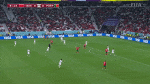
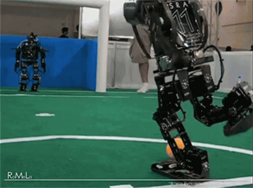

DATA CAN BE PREDICTED
Welcome to the UQAC Smart System for Sport Platform!
Our UQACsss platform is a comprehensive solution dedicated to optimizing sports performance,
specifically focused on football. It offers a set of innovative Data Science solutions designed
to meet the needs of teams, coaches, and sports analysts.



